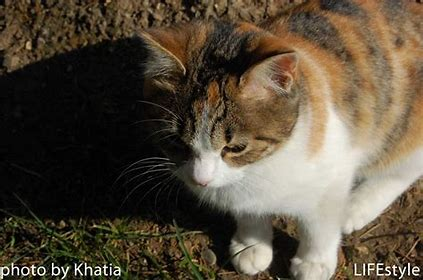
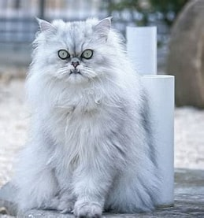

კატები
ბუნებრივი კატა
ბუნებრივი კატები (Felis catus) არიან ერთ-ერთი ყველაზე პოპულარული შინაური ცხოველები მსოფლიოში. მათ აქვთ ძლიერი ექსტრაქტები და შინაური ცხოვრების მოსაწყობად შესაფერისი უნარები.
პერსიული კატა
პერსიული კატები ცნობილია თავბრუსხვევის გრძელი ბალახით და სიმშვიდით. ისინი შესანიშნავი შინაური ცხოველები არიან.
ბირმული კატა
ბირმული კატები ცნობილია თავიანთი სითბოთი და მეგობრულობით. ისინი ძალიან მეგობრული და მოსიყვარულე არიან.

შოტლანდიური კატა
შოტლანდიური კატები ცნობილია თავიანთი ყურების უნიკალური ფორმით. ისინი ძალიან სასიამოვნო და მეგობრულები არიან.

ბრიტანული მოკლე ბეწვი
ბრიტანული მოკლე ბეწვები მშვიდი და კომუნიკაბელური კატებია, რომლებიც პოპულარული შინაური ცხოველები არიან.